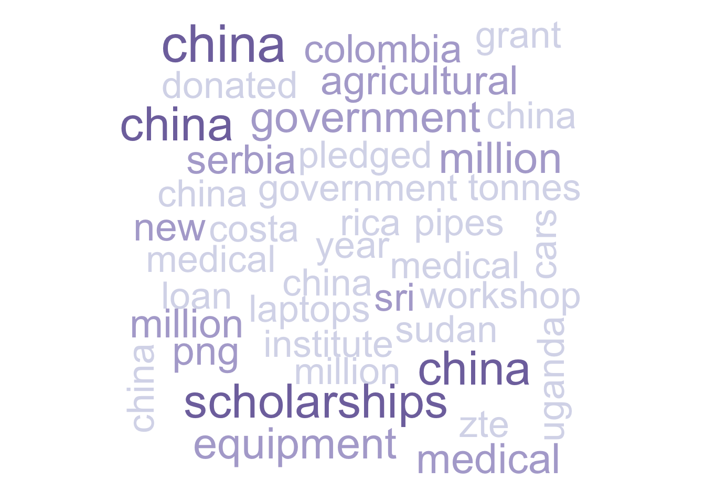

Chapter 5 Text Analysis
5.1 Total Term Frequency
Filtered for the decade of 2005-2014, the word cloud above shows the most frequently used words after combining all entries in AidData’s Global Chinese Official Finance Dataset. We deliberately left out top four words–“china”, “project”, “chinese”, and “million”–that are generally applicable to all descriptions regarding Chinese foreign development finance.
As suggested above, we have several observations regarding the analysis:
1. “loan[s]” issued from “bank[s]” were the most important finance means. “Aid[s]” and “grant[s]” “donated” were another important channel of funding.
2. Most projects were some sort of “construction” projects. This is in accordance with our earlier analysis and knowledge about the nature of Chinese development finance.
3. Many projects also involved government agnecies, as shown by words like “embassy”, “minister”, “president”, and “ambassador”. These also shows that government interactions between Chinese government and its foreign outposts, and those between Chinese and foreign governments are likely to be abundant.
4. Ten of twelve months in a year are included above. The exceptions are February and December. This totally makes sense, as December is the end of year and most governments and companies are wrapping up their year instead of developing new projects, and February is usually when Chinese New Year is in and a long holiday takes place.
5. Relatively frequently, the projects are “road” building, “equipment” provision, “power” plants construction, and “agricultural” projects.
5.2 Term Frequency by Entry

Filtered for the decade of 2005-2014, the word cloud above shows the most frequently used words among all entries without combining them together.
Here are some of our analysis based on the graph:
1. There are certain Chinese development finance whose main focuses is to provide “scholarships” to foreign students.
2. Several contries are important recipients of Chinese development finance, including “Uganda”, “Costa” “Rica”, “Sudan”, “Micronesia”, “Colombia”, “Sri” Lanka, and “Serbia”, all of which are developing countries that usually are not the go-to place for private financing.
3. Chinese telecommunication “ZTE” is the only firm listed above, which corresponds to its active role in Chinese foreign projects.
4. Types of projects that are mostly frequent based on this text analysis were “medical” projects, “pipe[lines]”, and automobiles (“cars”).
5.3 ODA/OOF Projects Comparison

Above is a pyramid plot comparison of the most important term stems between ODA projects and OOF projects. Please advise the Data Source section to check for the difference bewteen ODA and OOF projects. We filtered for the most commonly used 50 stems for ODA projects and OOF projects, and join them together. As we expected, there are obviously overlaps in the two top 50s. Like what we did to the first graph, we exclude four stems–“china”, “project”, “chines”, “million”–that are generally applicable to all projects.
Here are the findings based on our analysis:
1. “Govern[ment]” was mentioned more in ODA projects than OOF projects. This makes sense because most ODA projects are government actions, whereas OOF projects are more commercial driven.
2. Following this logic, it is understandable that we see more “donat[ion]” in ODA projects than in OOF projects, and we see almost all “medic[al]” and “hospit[al]” projects are ODA projects as a type of assistance in contrast with very limited OOF projects. Additionally, “technic[al]” and “agricultur[al]” often took the means of ODA projects. In comparison, “cultur[al]” exchanges such as “Confucius” “institut[e]” and “power” provision projects were more popular as OOF projects.
3. The finance sources of ODA and OOF projects differ significantly. ODA projects were mostly financed through “grant[s]” and “aid[s]”. Comparatively speaking, OOF projects relied on “bank[s]” more than ODA projects. Notably, there are almost equal mentions of “loan[s]” in ODA and OOF projects. China’s “EXIM” (Export-Import) Bank is among the top 50 stem for OOF projects. This corresponds to the fact that the EXIM bank is an important source for loans.